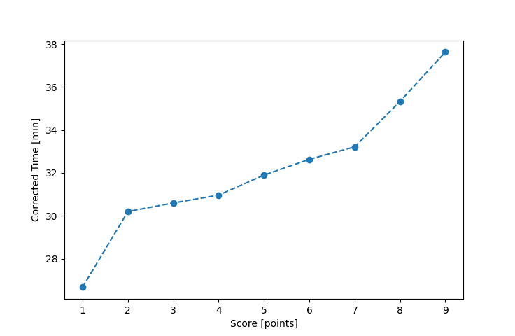

| Wind: | 2-3 (BFT) |
|---|---|
| RC: | Lewis_V, Barry_O |
| Date: | August 24, 2025 |
| Notes: | M3 |
| Rank / Score | Name | Boat | Input Time [mm:ss] | Input Offset [mm:ss] | Race Time [mm:ss] | Race Time [s] | Handicap | Corrected Time [s] | Corrected Time [mm:ss] |
|---|---|---|---|---|---|---|---|---|---|
| 1.0 | Ian_O | US-1 | 24:21 | 00:00 | 24:21 | 1461 | 0.91300 | 1600 | 26:40 |
| 2.0 | Chris_E | SF | 30:19 | 00:00 | 30:19 | 1819 | 1.00400 | 1812 | 30:12 |
| 3.0 | Heather_B | SF | 30:43 | 00:00 | 30:43 | 1843 | 1.00400 | 1836 | 30:36 |
| 4.0 | Matt_L | F5 | 29:55 | 00:00 | 29:55 | 1795 | 0.96600 | 1858 | 30:58 |
| 5.0 | Marcus_M | SF | 32:02 | 00:00 | 32:02 | 1922 | 1.00400 | 1914 | 31:54 |
| 6.0 | Jay_H | LASE | 30:07 | 00:00 | 30:07 | 1807 | 0.92300 | 1958 | 32:38 |
| 7.0 | Ryan_C | SF | 33:21 | 00:00 | 33:21 | 2001 | 1.00400 | 1993 | 33:13 |
| 8.0 | Adam_E | SF | 35:28 | 00:00 | 35:28 | 2128 | 1.00400 | 2120 | 35:20 |
| 9.0 | Elliott_F | SF | 37:47 | 00:00 | 37:47 | 2267 | 1.00400 | 2258 | 37:38 |

Application Notes:
All race results are unofficial
View source code at https://github.com/cessnao3/portsmouthracecalc/